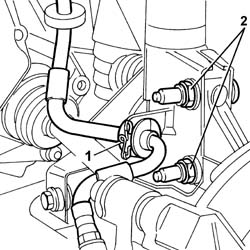
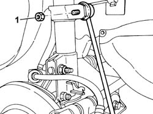
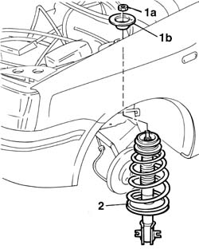
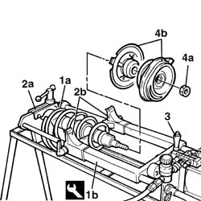
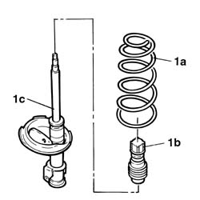
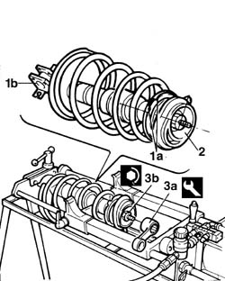
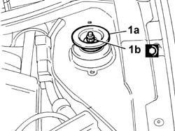

4410A12 front suspension damper (one), lh or rh - for mcpherson strut system - includes dismantling/re-building of assembly at bench r r
- Path
- Procedures > 44 SUSPENSION AND WHEELS > 4410 FRONT SUSPENSION > 4410A front dampers and springs > 4410A12 front suspension damper (one), lh or rh - for mcpherson strut system - includes dismantling/re-building of assembly at bench r r
- Kind
- repair procedure (removal / refitting; the operation number is the code)
- Applies to
- all engines; all production periods
- Interactive page
- https://sloeber94.github.io/elrnDB-fPnd/en/#/2752795
Applies to: all engines; all production periods
 Removing
Removing
 Refitting
RefittingRemove the car from the ramps.
4450B02 left front wheel r r .
Or:
4450B04 right front wheel r r .
1. Remove the brake caliper oil pipe from the shock absorber support.
2. Undo the bolts securing the shock absorbers to the strut.

Applies to: all engines; all production periods
1. If an anti-roll bar is fitted, undo the upper nut fastening the anti-roll bar anchoring rod to the shock absorber.

Applies to: all engines; all production periods
Lower the vehicle.
1. Hold the rod so it does not rotate then undo the nut securing the upper shock absorber mounting to the bodyshell (1a) and remove the buffer (1b).
2. Remove the front shock absorber.

Applies to: all engines; all production periods
1. Position the front shock absorber (1a) on the pneumatic cool for compressing the springs (1b).
 | Name | Country |
|---|---|---|
1b | Support | 1.874.555.000 |
2. Secure shock absorber with strut retaining device (2a) and spring compression brackets (2b)
3. Operate the lever on the compressed air blower and compress the shock absorber spring.
4. Undo retaining nut (4a) remove shock absorber block and flange (4b).

Applies to: all engines; all production periods
Operate on the lever on the device to turn off the air supply. Wait until the spring releases and remove the front suspension from the device.
1. Withdraw spring (1a) and gaiter (1b) from the shock absorber (1c).

Applies to: all engines; all production periods
Refitting
RemovingRefit the boot onto the rear shock absorber
Refit the spring onto the shock absorber
Reposition the shock absorber assembly onto the pneumatic device
| Name | Country |
|---|---|---|
- | Support | 1.874.555.000 |
Position the spring onto the relevant end section
Secure the shock absorber with the strut block retaining device and with the appropriate brackets for compressing the spring.
1. Fit the flange, aligning groove (1a) with attachment zone (1b) of the shock absorber on the strut
2. Fit the rubber block complete with bearing
Operate the lever on the device to close the pressurised air blower then wait until the spring is completely released.
3. Using tool (3a) tighten the upper mounting retaining nut (3b) to torque.
| Name | Country |
|---|---|---|
3a | Spanner | 1.870.754.000 |
 | Fastening | Component | Ø | Value (daNm) |
|---|---|---|---|---|
3b | Nut | FRONT DAMPER | M10 x 1.5 | 4 |

Applies to: all engines; all production periods
Remove the front shock absorber from the pneumatic tool for compressing springs.
Fit the shock absorber on the vehicle.
1. Fit upper block (1a) and tighten retaining nut (1b).

Applies to: all engines; all production periods
Raise the car.
Tighten the bolts fixing the shock absorber to the steering knuckle to the specified torque.
| Fastening | Component | Ø | Value (daNm) |
|---|---|---|---|---|
- | Bolt | FRONT HUB STEERING KNUCKLE. | M10 x 1.25 | 7.5 |
Tighten the nut fixing the anti-roll bar anchoring rod to the shock absorber to torque.
| Fastening | Component | Ø | Value (daNm) |
|---|---|---|---|---|
- | Bolt | FRONT ANTI-ROLL BAR. ANCHORAGE ROD. | M8 | 2.3 |
Fit the brake caliper pipe.
4450B02 left front wheel r r .
Or:
4450B04 right front wheel r r .
Lower the vehicle with the wheels resting on the ground.
Secure the shock absorber stem and tighten the retaining nut of the upper mounting.
| Fastening | Component | Ø | Value (daNm) |
|---|---|---|---|---|
- | Nut | FRONT DAMPER | M12 x 1.25 | 6 |
Connect the negative (-) battery terminal
Close the bonnet lid.
Remove the car from the ramps.
Topics linked from this page (2)
Topics that link to this page (7)
- H005 POOR DRIVING COMFORT - AT FRONT
- H007 EXCESSIVE ROLLING/PITCHING - AT FRONT
- S17 FRONT SUSPENSION NOISE (WHISTLE/HUM)
- S18 FRONT SUSPENSION NOISE (KNOCK)
- S27 REAR SUSPENSION NOISE (WHISTLE/HUM)
- Z53 MISFIRE ERROR
- 4410A18 Front suspension dampers - for mcpherson strut system - R+R - includes dismantling/re-building of assemblies at bench